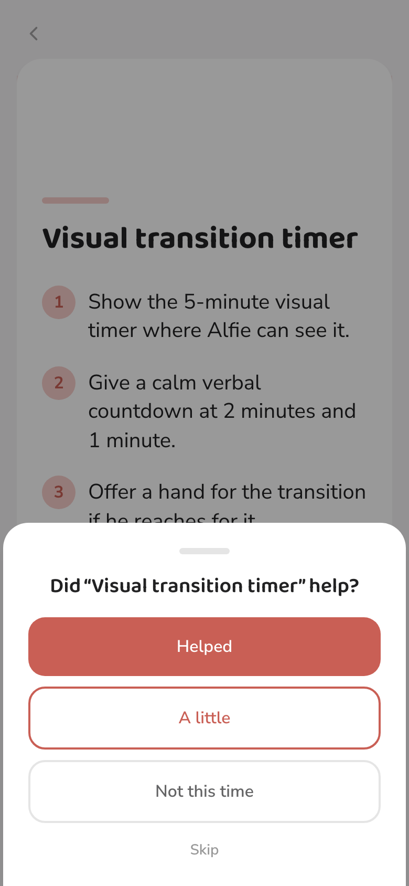
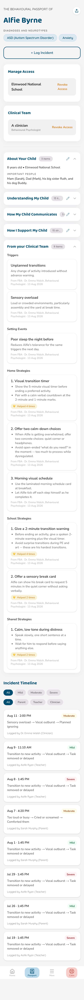
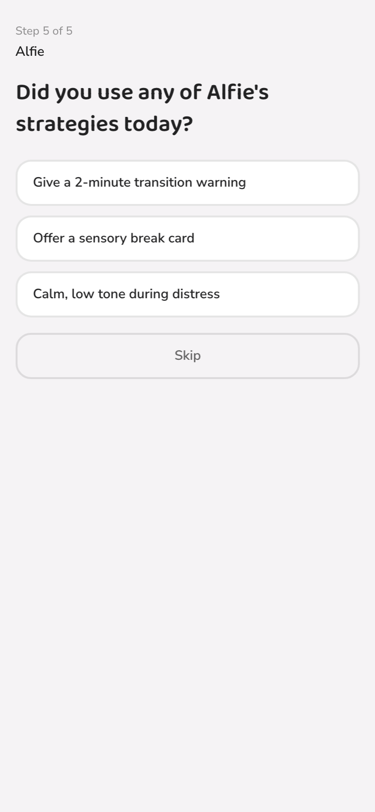
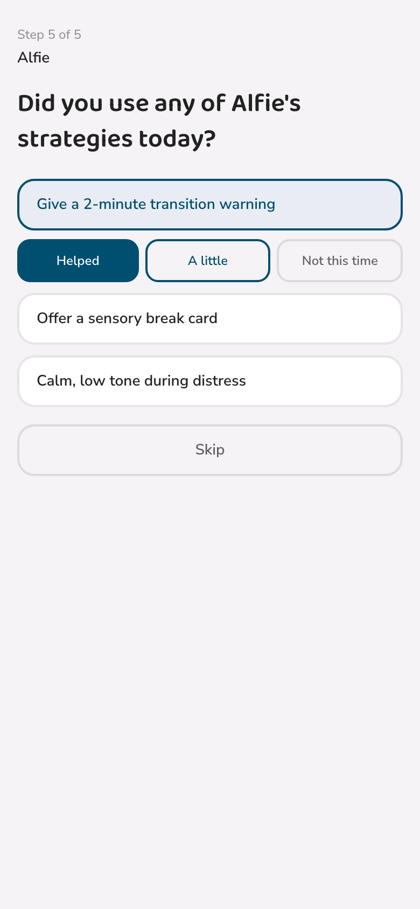
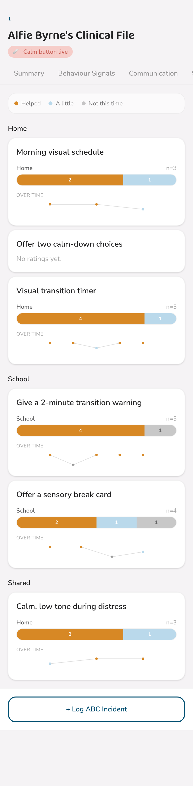
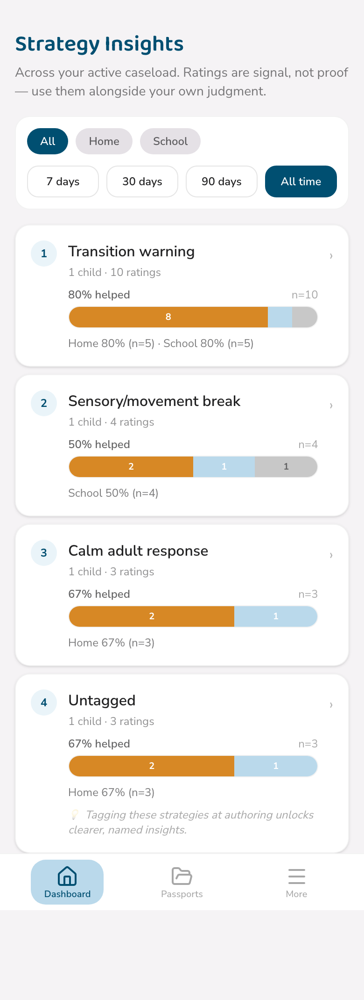
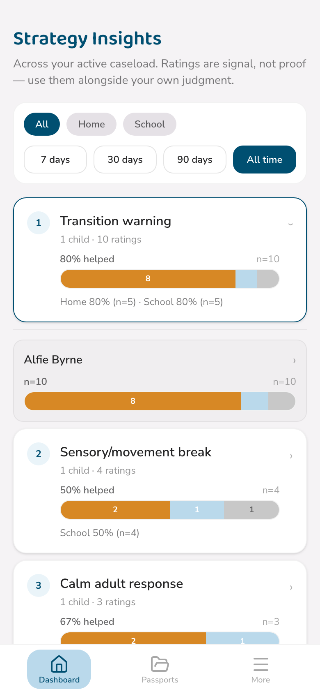
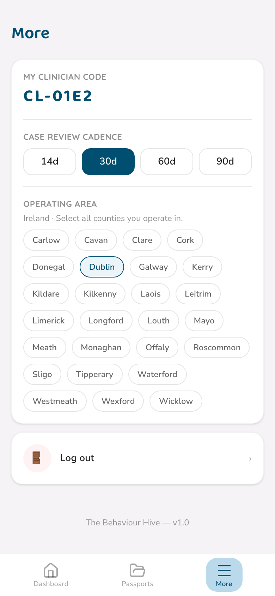
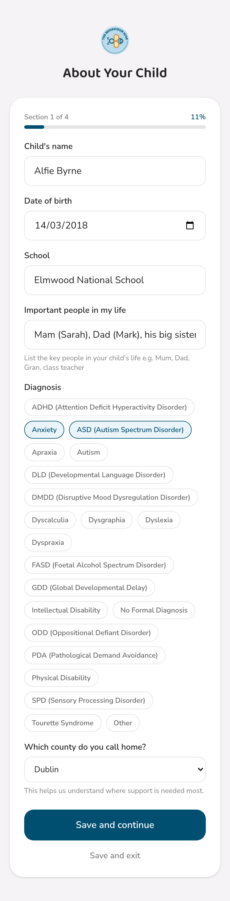

B
The Behaviour Hive
Strategy Effectiveness
Turning "did that help?" into real, rankable evidence.
Feature Guide · Trial Programme Edition
For technical help, contact daniel@thebehaviourhive.com
Chapter 1
What this is
Every strategy a clinician recommends is, at first, a hypothesis — informed and considered, but untested in the real, messy world of an actual Tuesday afternoon. Strategy Effectiveness closes that loop: it turns quick, real-world ratings from parents and teachers into a picture of what's genuinely working.
Signal, not science
A rating is one person's honest read of one moment. The app counts and displays; it never diagnoses or recommends on your behalf. Sample counts are shown everywhere a percentage appears, and anything based on too little data says so plainly rather than presenting a confident-looking number.
Every rating ask is skippable in one tap. At most one ask ever appears per Calm session, and a teacher is never asked more than three times a week per child. Nobody is nagged into rating anything.
Chapter 2
Rating, as a parent
The only rating ask a parent sees happens naturally on the way out of the Calm flow, for the last card actually looked at.

One tap, then straight on to the next step — no separate confirmation screen
This never appears if you leave via the safety line — see the Calm Button guide for that path. It's about the strategy card, not the moment itself.
The "Helped" counter
Once a strategy has a positive rating or two behind it, a small warm badge appears on it in "From your Clinical Team" on your child's passport.

💛 A quiet confirmation something is working — never a negative counter
You'll never see a count of times something didn't help on your own view — this counter is deliberately warmth-only. A strategy with no ratings yet, or only "not helping" ratings, simply shows nothing here.
Chapter 3
Rating, as a teacher
Your end-of-day update gains one optional extra step: a quick check on whether you used any of the pupil's school or shared strategies today.

Every school and shared strategy shows as a tappable chip
Tapping a chip reveals the three options right there — no separate screen. You can rate up to two strategies per update; "Skip" is always available and always visible.

A rated chip shows a checkmark; the rest stay tappable
This step only ever appears up to three times a week per pupil, whether or not you actually rate anything — the limit counts how often you're asked, not how often you answer. You'll never see it more than that, however many EOD updates you send.
You'll only ever see strategies you're already able to see elsewhere on the passport — school and shared strategies, never anything marked home-only.
Chapter 4
Reading it, as a clinician
Three pieces make up the clinician side: tagging strategies with a type, a per-child effectiveness view, and a caseload-wide ranking.
Tagging at authoring
Every strategy in the FBA's Recommendations section can optionally carry a strategy type — a shared vocabulary like "Transition warning" or "Choice-making" that lets ratings roll up meaningfully across different children. Tagging is metadata, so it stays editable even after the FBA is locked.

A "Strategy type" select sits under every recommendation, home, school, or shared
Untagged strategies are never treated as incomplete — they simply group as "Untagged" in every rollup, with a gentle nudge to tag them for clearer insight later.
Per-child effectiveness
The Clinical File's Effectiveness tab shows every deployed strategy with a proportion bar of Helped / A little / Not, a home-vs-school split wherever both have data, and a sample count on everything.

Below a small sample size, an honest "Early signal" note replaces a misleadingly confident percentage
This view is read-only — it counts and displays, it never recommends dropping or keeping a strategy on your behalf.
Strategy Insights, across your caseload
From your dashboard, Strategy Insights ranks every strategy type across your own actively-linked cases — filterable by home/school and by time period.

Ranked by rating volume, with the Untagged bucket surfaced honestly rather than hidden
Tap any row to drill into exactly which children are behind that number, with a link straight into each one's Clinical File.

A per-child breakdown, one tap from the ranked list
Scoped to you, always
This view only ever reflects your own currently active-linked cases. If a case is revoked, it drops out of every rollup immediately — there's nothing to manually refresh or clear.
Operating Area
Your verification credentials and your More menu both carry an Operating Area field — the county or counties you practise in.

Editable any time from More, without disturbing your verification status
Chapter 5
Why we ask about county
Passport creation includes one small, optional question: which county do you call home?

Optional, and editable later from the same section you filled it in
It's entirely optional, and it helps us understand, in aggregate, where support is genuinely needed most across the country — nothing more specific than that. It's the same underlying county reference data a clinician's own Operating Area uses, which is deliberately structured so counties outside the Republic of Ireland can be added later without any rework.
Chapter 6
Help & Support
A few common questions about Strategy Effectiveness specifically.
As a parent, can I rate a strategy any time I like, not just after Calm?
Not currently — the rating ask exists only on the way out of a Calm session, tied to the last card viewed. This keeps it low-friction and prevents any single strategy from being nagged about.
I'm a teacher and don't see the strategy-rating step in my EOD update.
It only appears when the pupil has at least one school or shared strategy to rate, and you're under the weekly ask limit. If neither is true, the update simply has its usual four steps.
As a clinician, why does a strategy type I tagged still show as "Untagged" in Strategy Insights?
Insights and the Effectiveness view read the tag from the strategy's already-extracted copy on the passport, not from the FBA form itself. If you tag a strategy post-hoc on a locked FBA, that update now propagates through automatically — if you still see a mismatch, it's worth flagging to us.
Can a teacher see aggregate ratings, the way a clinician can?
No — teachers can rate school and shared strategies, but never see any rollup or aggregate. Strategy Insights and the Effectiveness view are clinician-only.
Still stuck?
For technical help, contact daniel@thebehaviourhive.com